The day starts with one card.
Open M/ARC and the first card already knows what is scheduled. On a Push day it says Start Push. Mid-session it says how many exercises are done. Afterwards it says Push done, 18 sets logged, recovery has started. Tap Take today off and the day counts as rest: your streak and this week’s target leave it out.
Under it sits Readiness, a 0 to 100 score built from your check-in, sleep, heart rate, HRV and recent load. Green from 67, Red at 33 or below, and marked calibrating for the first 14 days. It comes with one line of advice, such as keep loads steady today and skip any increases. Below that, the muscles still recovering and the time each one needs, then the week in three numbers: workouts, sets, records.
Push
3 exercises planned.
Amber · calibrating
66the muscles you would train today are not fully recovered.
Every set arrives with a number and a reason.
Each exercise in a split shows today’s target before you start, taken from your last sessions and your goal: 62.5 kg for 8, top of the range twice, step up. In the session the target is pre-filled as a placeholder. Tap Log as planned and move on, or type what you actually did.
Rate every set with one tap. E is easy, three or more reps left. I is ideal, one to three left. M is max, nothing left. A missing rating never counts as easy or max; it lowers confidence instead. Drop sets count for volume and never for records. A set that beats your best gets a PR chip while you are still on the bench.
Rest runs by timer, or by heart rate when a Bluetooth watch is connected: the rest ends when your pulse settles and falls back to the timer if the signal drops. Tap a barbell target to see plates per side in the unit that gym uses. Up to eight gyms, and each one remembers which unit every machine and rack takes.
Why this target
- Top of range twice, step up.
- Effort missing, repeat and rate.
- Readiness Amber, hold the load.
- Primary muscle under 60% recovered, hold the load.
- Red day or lighter week, fewer sets.
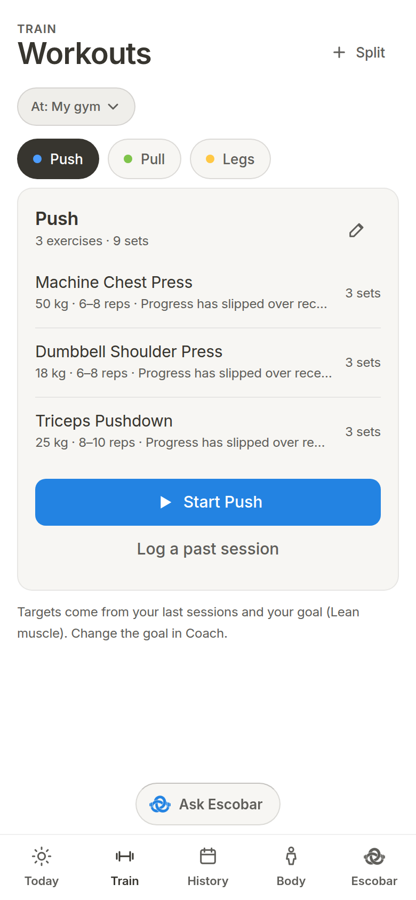
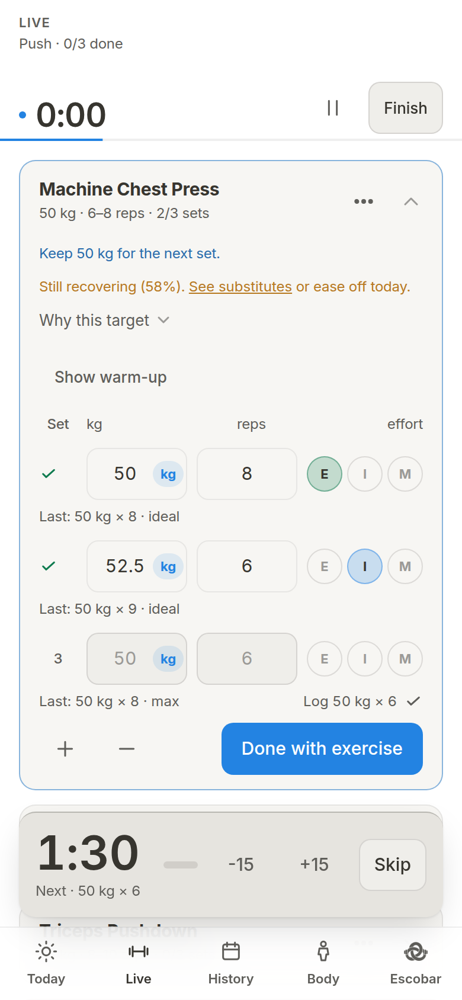
A muscle map that knows what you did on Tuesday.
Every working set leaves an impulse on the muscles it used, sized by their role in the lift, the effort you rated, the reps and the load. The impulse decays, stacks over seven days, and the model adjusts to how your next session actually went, in both directions, within limits.
The map shades 24 muscles. Ready for hard work at 90%, fully recovered at 97%. Tap one for Ready now or Full by 10 pm, with a confidence label. When sleep, resting heart rate and load slow everything down, the map says so in one line, whole body recovering about 12% slower than usual this week.
Switch to This week to see effective sets per muscle against a target band. Switch to Levels to see how much each muscle has been trained, as a relative measure, not a medical one.
Recovery time depends on sets, load and effort, and adjusts to your own history in both directions, within limits.
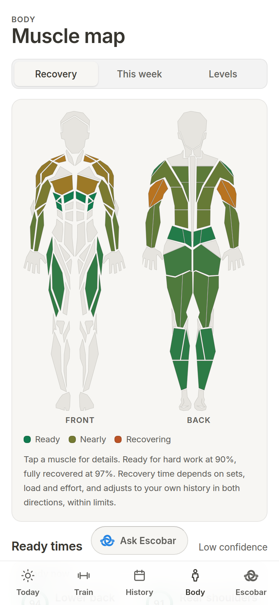
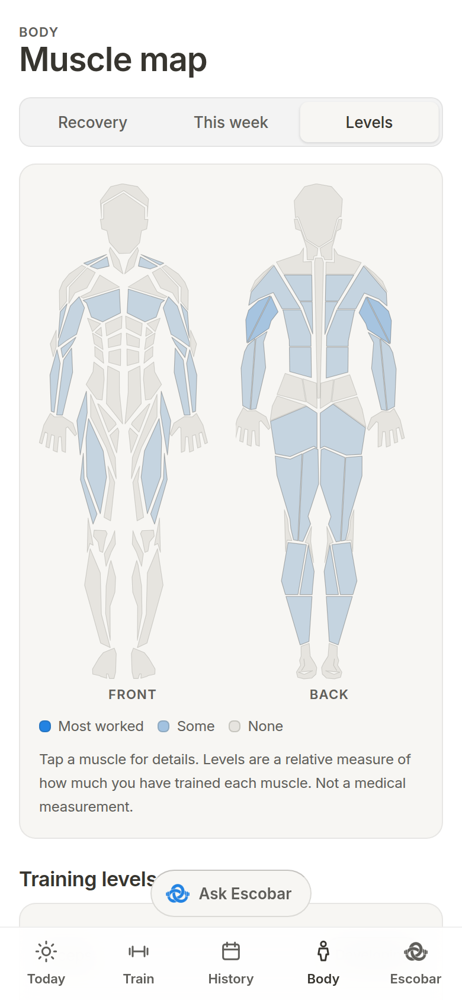
A coach that shows its working.
Escobar is the online coach. It is off until you turn it on, and it reads only what you allow. Health data and body data leave the phone only with their own switches on, and turning a switch off removes that data from replayed history.
Ask about anything in your log. Every number in the answer is checked against your own data before it stands; a number that does not match is repaired or marked. When Escobar proposes a split, a schedule, a goal, today’s loads or a lighter week, it arrives as a card. Nothing changes until you tap Apply, and you have eight seconds to undo. Fourteen kinds of change work this way.
Without a network the tab still works. Ranked notes, a weekly review, deload suggestions and 422 exercise cues come from the phone. Each note reads Noticed, Means, Do next. Mention an injury or a piece of equipment and, with Let Escobar remember on, it is kept in a list you can read and edit under What Escobar knows.
- NoticedPush is scheduled today. Triceps is 45% recovered.
- MeansHard triceps sets would land on a muscle that is not ready.
- Do nextSwap to another split, or keep Push light and put the hard sets elsewhere.
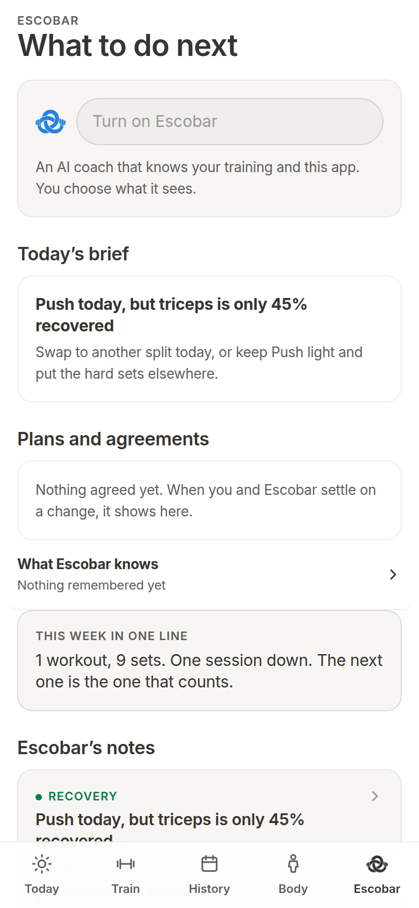
A log you can go back and correct.
Trained days sit on a month calendar. Swipe sideways to page months, tap a day to list its sessions. Open any session to fix a set or a load; recovery is rebuilt from history after the edit. Swipe a session away and a toast offers Undo, heart data included.
Stats keeps weekly volume, a sparkline per exercise with a plain trend word, and six kinds of records: heaviest load, strength estimate, more reps at a load, most reps, longest hold, furthest carry. Loads stay in the unit you typed them in. Share a week or a session as a card.
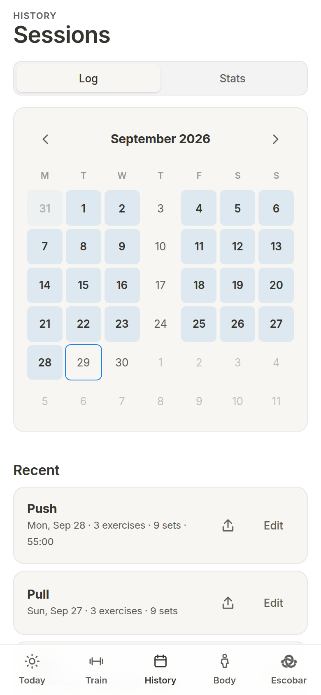
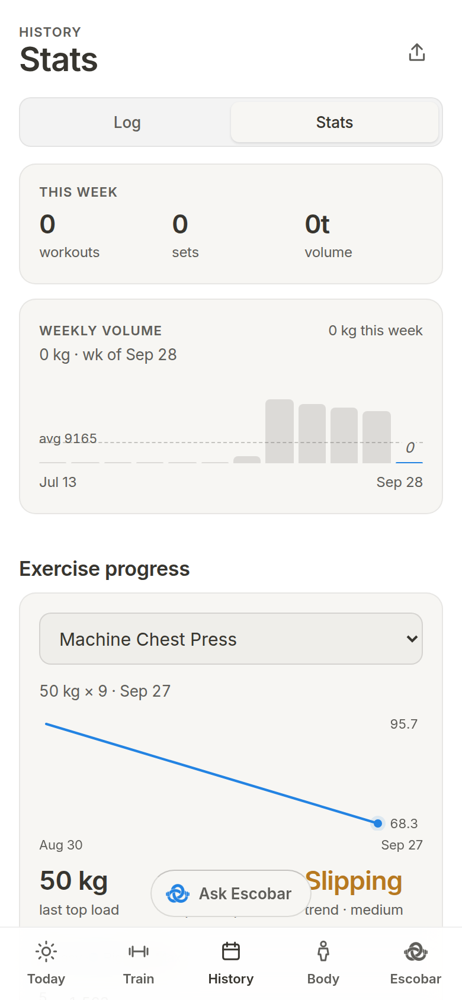
Nothing leaves the phone unless you send it.
Your log stays on your phone.
No account, no sign-in, no server copy.
It works without a signal.
The installed app and the coach’s notes run offline.
Your data is a file you own.
JSON backup with preview and Undo, CSV of every set, and a rescue copy if anything fails to read.
There is no account and no sign-in. Your log lives in the phone’s storage, coach photos in IndexedDB, heart data in a local side store. The installed web app keeps every built file, so it opens in a basement with no signal.
Export backup writes a JSON file. Restore backup previews it, applies it, and offers Undo. Export CSV hands you every filled-in set, for 90 days or all time. If saved data ever fails to read at start, the app keeps a copy aside and offers Save rescue file. Nothing is thrown away silently.
The online coach is the one exception. When you use it, the numbers its tools ask for go through the project’s own server to the coach service and back, and health and body data go only with their switches on. Quotas are counted per device and network address, not per person.
Five themes, switched with one crossfade.
Silent Black, Paper, Ember, Emerald and Midnight. Each is a complete token set, so every screen and chart recolours at once and the whole app crossfades when you switch. This page is set in Paper.
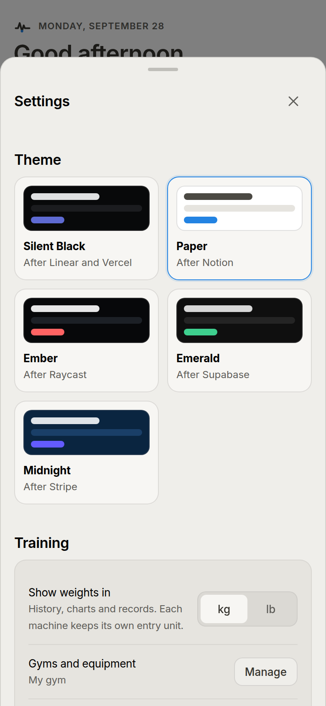
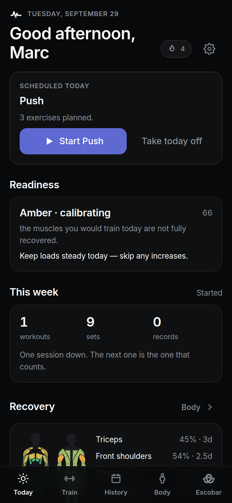
Silent Blackafter Linear and Vercel Paperafter Notion 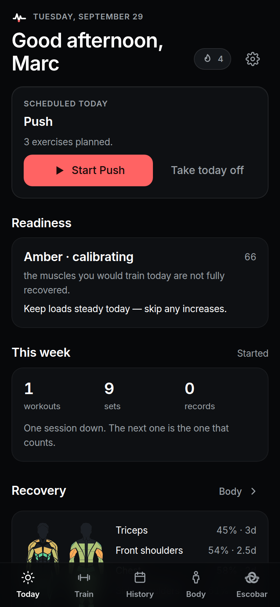
Emberafter Raycast 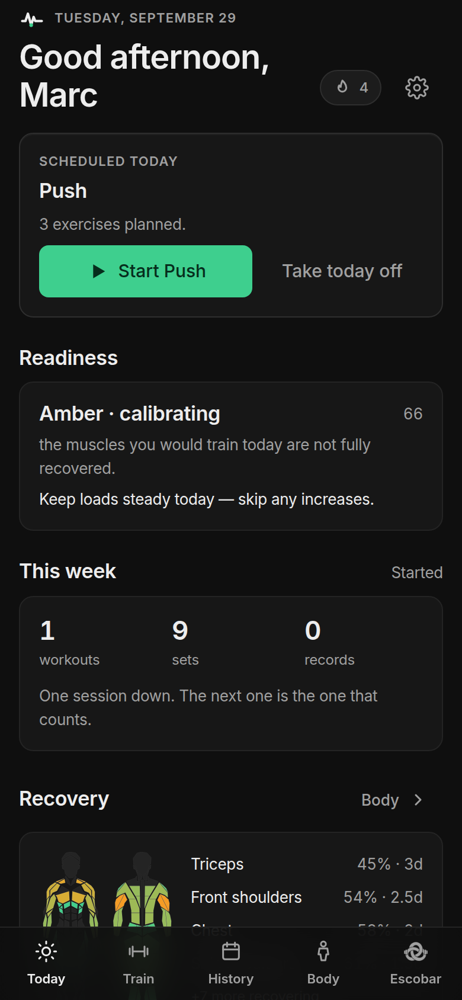
Emeraldafter Supabase 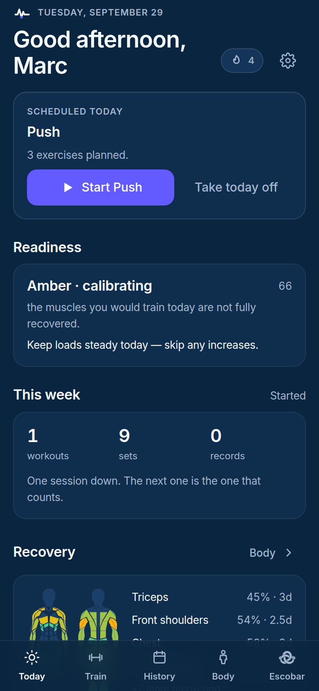
Midnightafter Stripe
Install the APK.
Android APK
Version 37.1.0. Every build is signed with one permanent key, and CI checks the fingerprint before an APK is released. Check the file you downloaded with apksigner and compare the SHA-256 below. Obtainium can install M/ARC straight from the GitHub releases page and checks the signature for you.
05:66:9A:D2:72:1C:6A:BA:F9:FD:D4:B9:B8:4E:2F:B7: 94:48:44:B1:DE:F3:59:84: 5F:01:5F:2B:67:CA:F1:F5
apksigner verify --print-certs MARC-debug.apk
If the fingerprint matches, the file was signed by the M/ARC key and has not been altered.
Source
The code is public on GitHub. Read it, build it, file an issue. Each push runs the typecheck, 1,255 unit tests in three time zones, a production build and a visual gate across the five themes before an APK is signed.
Read the sourceIn the browser, later
The web app is not published yet. When it is, you will open it in Chrome, Edge or Samsung Internet on Android and choose Add to Home Screen. Until then, build it from the source.
Read the source